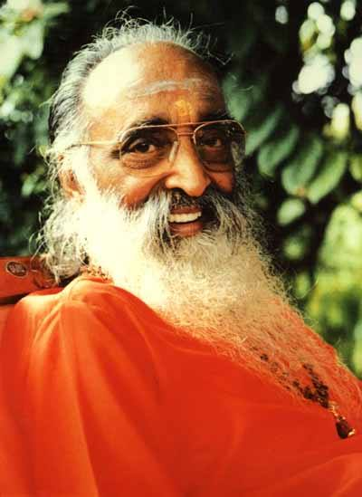
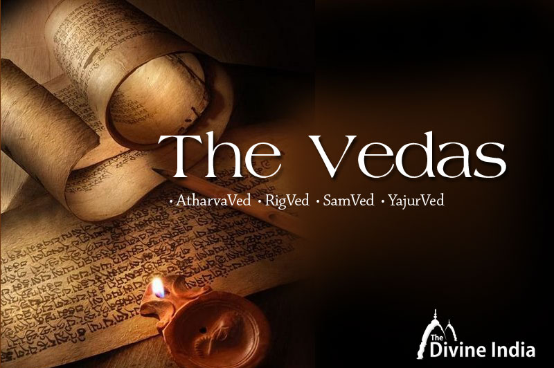

Satyam Dharmam Shantham Premam Ahimsa Bhramacharya
Satyam Dharmam Shantham Premam Ahimsa Bhramacharya

WHAT IS VEDA?
The term veda means “knowledge” and "wisdom".
The Vedas are the most ancient Hindu and yogic texts.
Vedas are considered to have no author.
They were given by the Supreme God about 1,96,08,53,120 years ago to 4 rishis who born from earth when the universe was created.
God gave the Vedas to rishis directly in their mind.
Those rishis translated them in sanskrit language.
There are six values in the Vedas.
Satyam means truthfulness.
Dharma means a purpose in your life
Shantam means inner peace
Premam may be defined as the love of God.
Ahimsa is an ancient Indian principle of nonviolence.
Brahmacharya is a concept within Indian religions that means to trust god completely.

By:-
Ananya Venkataraman - VIII D
Adithi C - VIII B
Sai Jasvitha - VIII B
Links:-
Home
Satyam
Dharmam
Shantam
Premam
Ahimsa
Brahmacharya